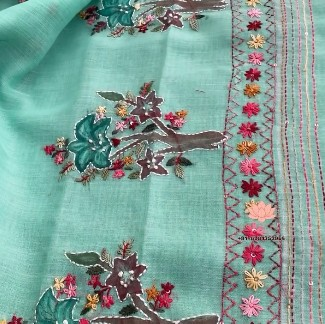
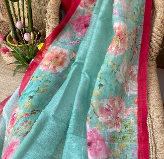
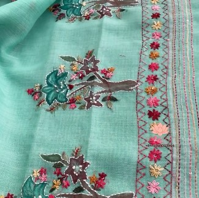
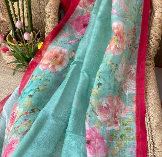

Linen Silk
Intro & History: Linen silk is a contemporary evolution of traditional linen and silk weaves. While linen-silk blends have ancient roots (especially in Bengal and Gujarat), digital printing technology emerged in the late 20th century, allowing intricate, high-resolution patterns to be applied directly onto the fabric. This fusion combines age-old handloom textures with modern design precision, making heritage motifs more accessible and versatile.
Significance & Work: The base is a luxurious linen-silk blend — linen for crispness and breathability, silk for subtle sheen and drape. Digital printing enables vibrant, detailed florals, paisleys, geometric patterns, or abstract designs with photographic accuracy and no color limitations. Eco-friendly inks and sustainable fabrics are increasingly used. The saree is lightweight, wrinkle-resistant, and easy to maintain — ideal for summer weddings, casual chic occasions, or travel. It bridges tradition and modernity, offering timeless motifs with contemporary convenience and a fresh take on Indian ethnic wear.
 


